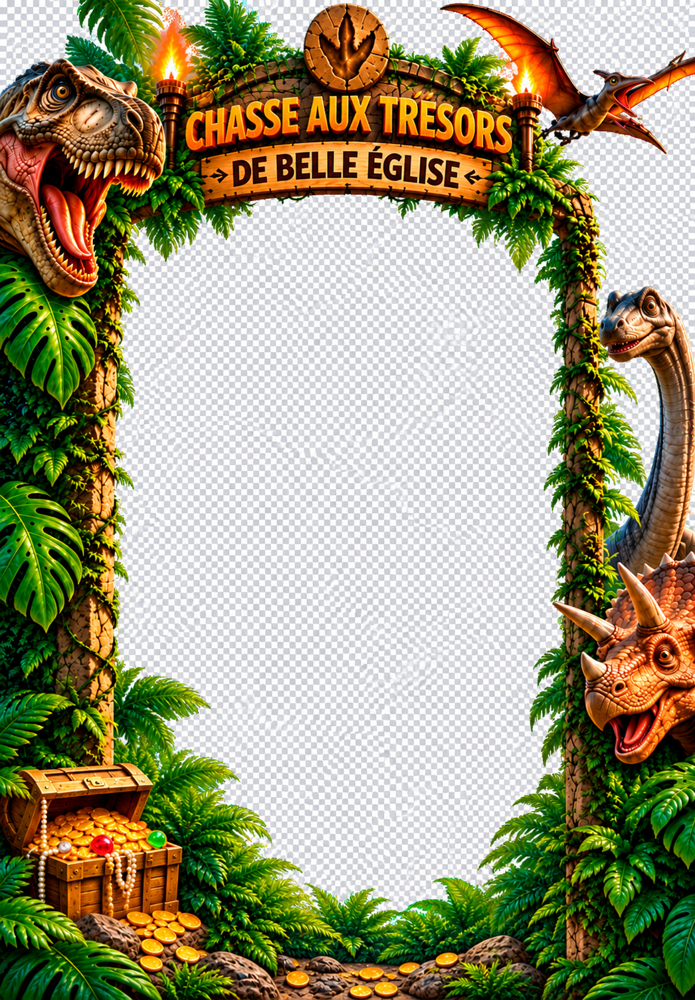

CHASSE AU TRÉSOR DE BELLE ÉGLISE
Immortalise ton aventure préhistorique ! 🦖

Appuie sur « Ouvrir la caméra » puis autorise l’accès à la caméra.
Ton souvenir est prêt !
Les photos ne sont pas envoyées sur un serveur. Si le cadrage semble différent selon le téléphone, essaie de tenir le téléphone verticalement. Sur iPhone, ouvre l’image enregistrée puis choisis « Enregistrer l’image » pour l’ajouter à Photos.